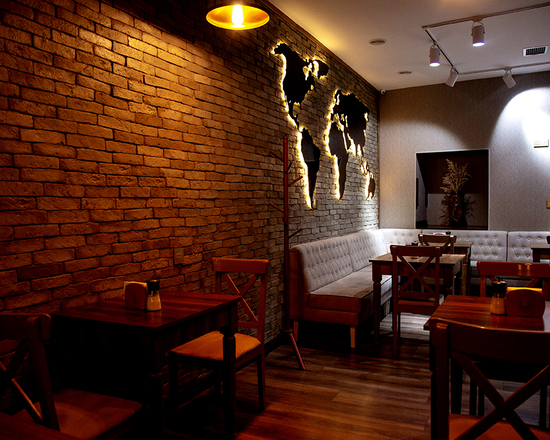
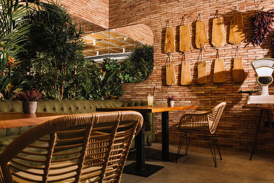

El viaje del sabor
Bienvenidos a Serenata de sabores, un rincón culinario fundado en el corazón de Bogotá en el año 2010. Nuestro restaurante nace del amor por las ricas y diversas tradiciones gastronómicas de todo el continente americano. En Serenata de sabores cada plato es una celebración de los ingredientes más frescos y auténticos que nuestra tierra tiene para ofrecer.
Desde su fundación, nos hemos dedicado a ser un puente entre las culturas culinarias de América, llevando a su mesa una fusión única de sabores, colores y aromas. Nuestro compromiso con la calidad y la excelencia se refleja en cada detalle: desde la selección cuidadosa de nuestros proveedores hasta la preparación artesanal de cada una de nuestras recetas.
En Serenata de sabores, creemos en la magia de la cocina como una forma de conectar a las personas y crear experiencias memorables. Nuestro equipo de chefs expertos y apasionados trabajan incansablemente para ofrecer una experiencia gastronómica excepcional, combinando técnicas tradicionales con un toque contemporáneo que sorprende y deleita a nuestros comensales.
Nos enorgullece ser un punto de encuentro donde la calidez, la hospitalidad y el respeto por la naturaleza se fusionan. Cada visita a alguno de nuestros restaurantes es una invitación a descubrir los tesoros culinarios de América, en un ambiente acogedor y lleno de encanto.
Nuestro propósito culinario
Ofrecer una experiencia gastronómica única que celebre la diversidad y riqueza de las tradiciones culinarias de todo el continente americano. Desde nuestras entradas, platos fuertes, bebidas y postres, cada detalle de nuestro menú está diseñado para llevarte en un viaje por los sabores auténticos y emblemáticos de Norteamérica, Centroamérica, Sudamérica y las islas del Caribe.
Futuras aspiraciones
Convertirnos en el referente principal de la gastronomía americana a nivel global. Aspiramos a ser reconocidos no solo por la calidad y autenticidad de nuestros platos, sino también por nuestra hospitalidad y el ambiente acogedor que ofrecemos. Queremos que Serenta de sabores sea sinónimo de excelencia culinaria y un lugar donde las personas de todas las culturas se sientan bienvenidas y conectadas a través de la comida.